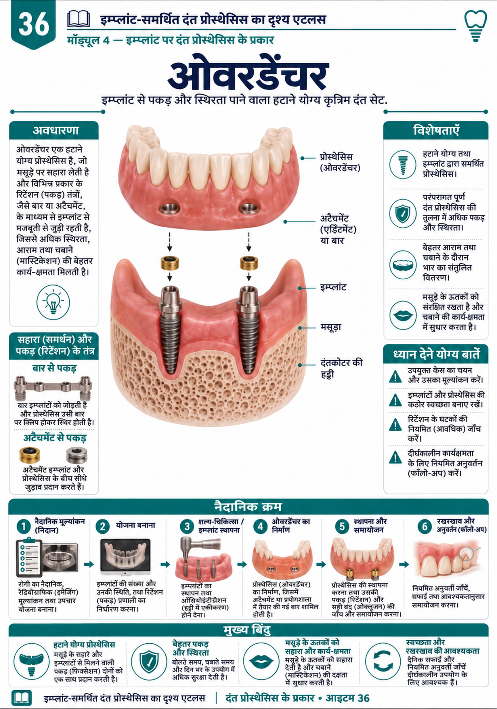
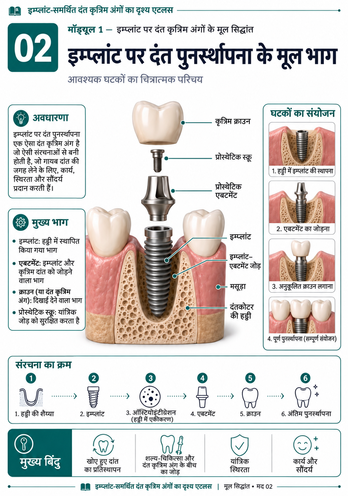
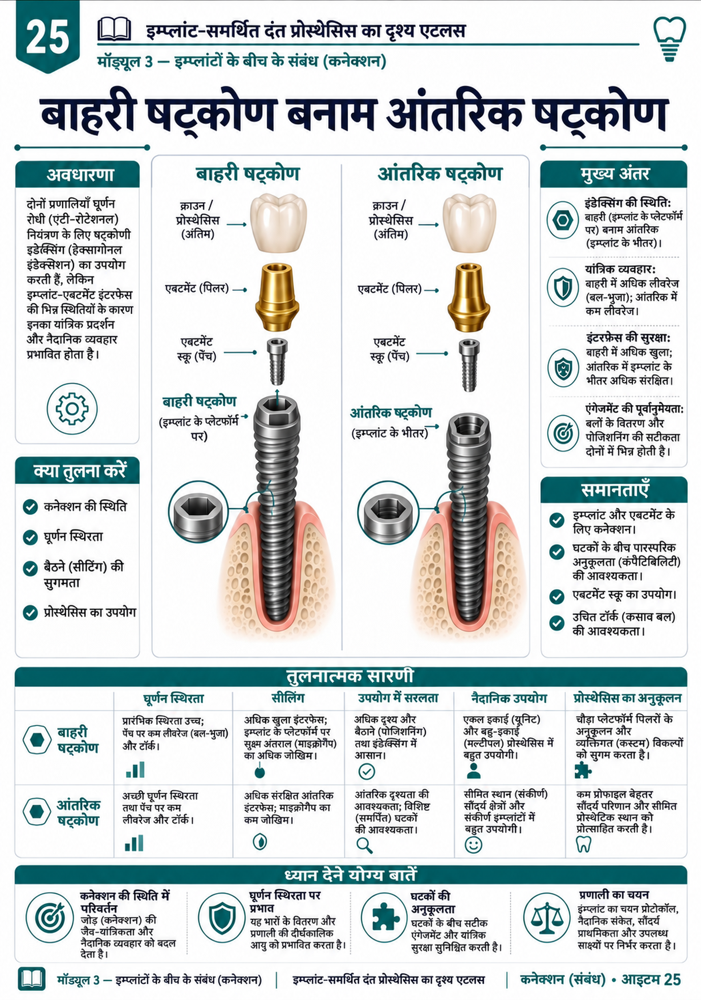
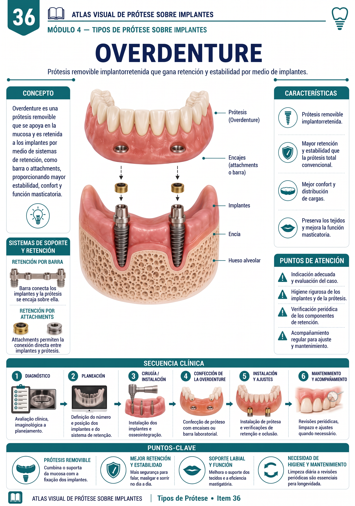
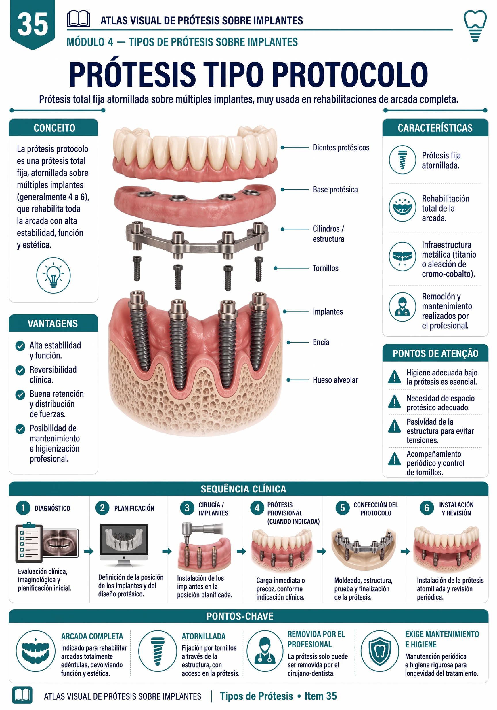
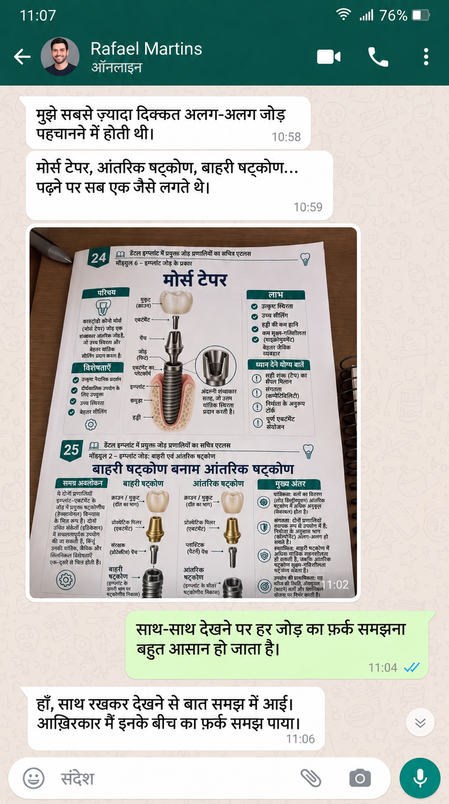
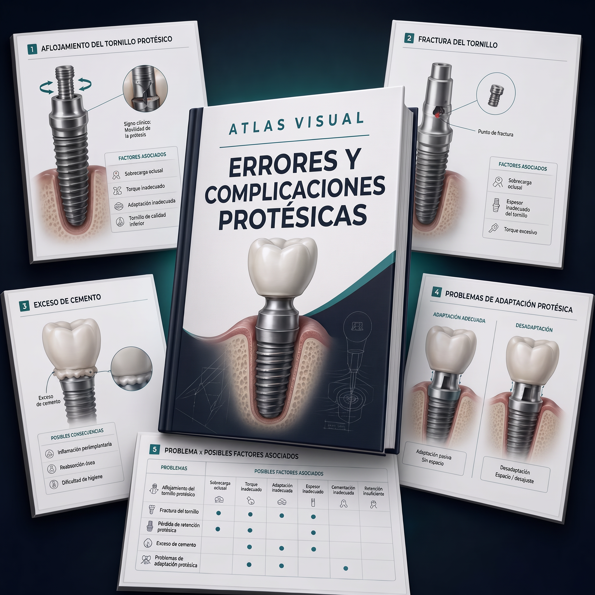
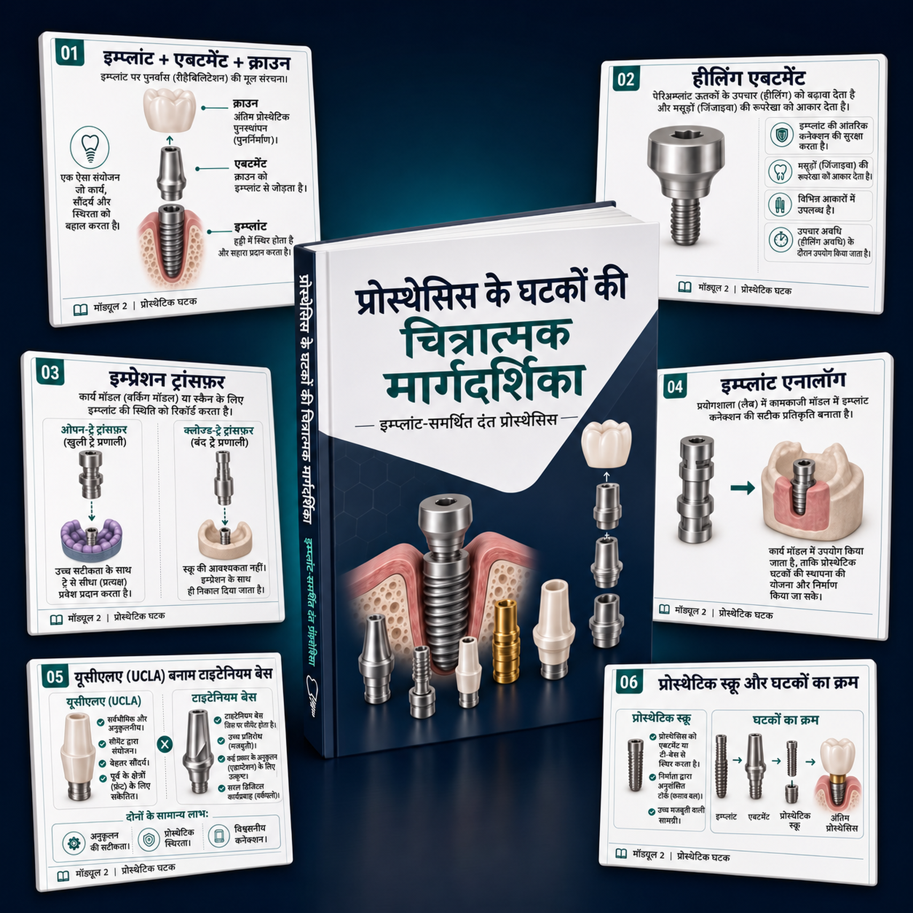
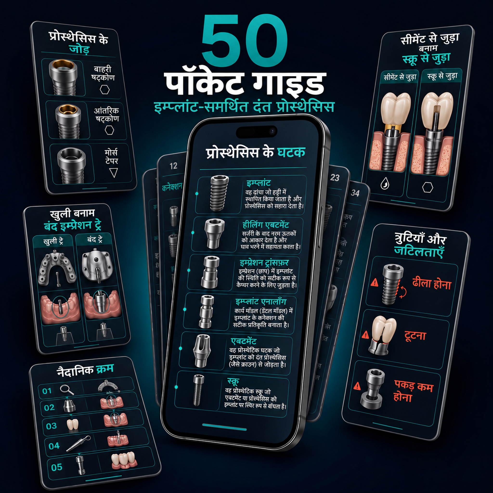

विशेष ऑफ़र केवल आज के लिए उपलब्ध है
+120 इम्प्लांट प्रोस्थेसिस के विज़ुअल एटलस
अध्ययन, रिवीजन और परामर्श के लिए व्यवस्थित घटकों (COMPONENTS), कनेक्शन, वर्गीकरण और क्लिनिकल चरणों के साथ

इम्प्लांट प्रोस्थेसिस की मुख्य सामग्री को समझने और देखने के लिए अपने मोबाइल पर +120 विज़ुअल एटलस प्राप्त करें, जिसमें प्रोस्थेटिक घटक (Components), कनेक्शन, प्रोस्थेसिस के प्रकार, इम्प्रेशन तकनीक, प्लानिंग, क्लिनिकल चरण, ऑक्लूजन (Occlusion) और जटिलताएं शामिल हैं।
आपको सब कुछ तुरंत आपके WhatsAppऔर आपके ई-मेल पर मिलता है
ई-मेल पर मिलता है
अंदर से देखें वह अध्ययन सामग्री जो आपको मिलने वाली है
+120 इम्प्लांट प्रोस्थेसिस विज़ुअल एटलस की लाइब्रेरी की एक झलक, जिसे इस तरह व्यवस्थित किया गया है ताकि आप घटकों, कनेक्शनों, वर्गीकरणों, तुलनाओं, क्लिनिकल अनुक्रमों और इस क्षेत्र की मुख्य अवधारणाओं को तेज़ी से देख और समझ सकें।







अलग-अलग स्लाइड्स, नोट्स और PDF में एक ही जानकारी ढूँढने में समय बर्बाद करना बंद करें।
इम्प्लांट प्रोस्थेसिस विज़ुअल एटलस के साथ, आप जिस विषय का रिवीजन करना चाहते हैं उसे तुरंत पा सकते हैं और आसानी से देख सकते हैं:
- प्रोस्थेटिक घटक (Prosthetic Components)
- इम्प्लांट कनेक्शन (Implant Connections)
- प्रोस्थेसिस के प्रकार (Types of Prostheses)
- महत्वपूर्ण वर्गीकरण (Important Classifications)
- इम्प्लांट पर इम्प्रेशन तकनीक (Implant Impressions)
- क्लिनिकल अनुक्रम (Clinical Sequences)
- प्रोस्थेटिक प्लानिंग (Prosthetic Planning)
- त्रुटियाँ और जटिलताएँ (Errors & Complications)
- विज़ुअल तुलना (Visual Comparisons)
- त्वरित संदर्भ के लिए सारांश (Quick Summaries)

बस इसे खोलें, अपनी ज़रूरत का विषय चुनें और अध्ययन, रिवीजन या त्वरित परामर्श के लिए एटलस को संदर्भ के रूप में उपयोग करें।
उन लोगों के लिए आदर्श जो इम्प्लांट प्रोस्थेसिस का अध्ययन कर रहे हैं या इसमें अपनी समझ गहरी करना शुरू कर रहे हैं
यदि आप डेंटिस्ट्री (BDS/MDS) के छात्र हैं, नए स्नातक (Fresh Graduate) हैं या इम्प्लांटोलॉजी और प्रोस्थोडॉन्टिक्स के क्षेत्र में अपना अध्ययन शुरू कर रहे हैं, तो इस सामग्री का उपयोग करें:
- परीक्षाओं और कक्षाओं से पहले प्रोस्थेटिक घटकों का रिवीजन करने के लिए।
- कनेक्शन के मुख्य प्रकारों में स्पष्ट अंतर समझने के लिए।
- अबटमेंट (Abutments), ट्रांसफर (Transfers), हीलिंग कैप्स और अन्य घटकों को विज़ुअली समझने के लिए।
- सीमेंटेड (Cement-retained) और स्क्रू-रिटेंड (Screw-retained) प्रोस्थेसिस की तुलना करने के लिए।
- इम्प्रेशन लेने के चरणों को बेहतर ढंग से समझने के लिए।
- क्लिनिकल और लेबोरेटरी अनुक्रमों का रिवीजन करने के लिए।
- उन विषयों को व्यवस्थित करने के लिए जो आमतौर पर अलग-अलग जगह बिखरे रहते हैं।
- लंबे पाठों और किताबों में बार-बार खोजे बिना वर्गीकरण देखने के लिए।
- प्रोस्थेटिक त्रुटियों और जटिलताओं का रिवीजन करने के लिए।
- अपनी पढ़ाई के दौरान मोबाइल से तुरंत परामर्श लेने के लिए।
यदि आप इनमें से कम से कम दो स्थितियों से खुद को जोड़ पाते हैं, तो इम्प्लांट प्रोस्थेसिस का विज़ुअल एटलस आपकी पढ़ाई और रिवीजन की दिनचर्या को आसान बनाने के लिए ही तैयार किया गया है।
कितनी बार आप घटकों, कनेक्शनों या क्लिनिकल चरणों को लेकर उलझन में पड़े हैं और आपको सब कुछ फिर से ढूँढना पड़ा है?
⏰ सीमित समय के ऑफ़र का लाभ उठाएं
देखें लोग इस अध्ययन सामग्री के बारे में क्या कह रहे हैं



⚡ तुरंत एक्सेस (Immediate Access)
देखें आपको क्या-क्या मिलने वाला है
- +120 इम्प्लांट प्रोस्थेसिस के विज़ुअल एटलस
- विषयों के अनुसार व्यवस्थित सामग्री
- इम्प्लांट प्रोस्थेसिस के मूल सिद्धांत (Fundamentals)
- रिवर्स प्लानिंग (Reverse Planning)
- इमर्जेंस प्रोफाइल (Emergence Profile)
- प्रोस्थेटिक स्पेस (Prosthetic Space)
- प्रोस्थेटिक घटक (Prosthetic Components)
- हीलिंग अबटमेंट / कैप्स (Healing Abutments)
- इम्प्रेशन ट्रांसफर / कोपिंग (Impression Transfers)
- इम्प्लांट एनालॉग (Implant Analogs)
- प्रोस्थेटिक अबटमेंट (Prosthetic Abutments)
- UCLA अबटमेंट (UCLA Abutment)
- टीआई-बेस (Ti-Base)
- प्रोस्थेटिक स्क्रू (Prosthetic Screws)
- एक्सटर्नल हेक्सागोन (External Hexagon)
- इंटरनल हेक्सागोन (Internal Hexagon)
- मोर्स टेपर (Morse Taper / Cone Morse)
- कनेक्शनों के बीच तुलना
- सिंगल-टूथ प्रोस्थेसिस (Single Crowns)
- मल्टीपल-यूनिट प्रोस्थेसिस (Multiple Bridges)
- प्रोटोकॉल प्रकार की प्रोस्थेसिस (Full-Arch Protocol)
- ओवरडेंचर (Overdentures)
- सीमेंटेड प्रोस्थेसिस (Cement-Retained)
- स्क्रू-रिटेंड प्रोस्थेसिस (Screw-Retained)
- ओपन ट्रे इम्प्रेशन (Open-Tray Impression)
- क्लोज्ड ट्रे इम्प्रेशन (Closed-Tray Impression)
- ट्रांसफर तकनीक (Transfer Techniques)
- प्रोस्थेटिक प्लानिंग (Prosthetic Planning)
- क्लिनिकल चरण (Clinical Steps)
- लेबोरेटरी चरण (Laboratory Steps)
- इम्प्लांटोलॉजी में लागू ऑक्लूजन (Implant Occlusion)
- बल वितरण (Force Distribution)
- स्क्रू का ढीला होना (Screw Loosening)
- फ्रैक्चर (Fractures)
- रिटेंशन की विफलता (Retention Failures)
- फिटिंग और अनुकूलन की समस्याएं (Adaptation Issues)
- प्रोस्थेटिक जटिलताएं (Prosthetic Complications)
- आमने-सामने की तुलना (Side-by-Side Comparisons)
- चरण-दर-चरण (Step-by-Step) एटलस
- त्वरित परामर्श के लिए एटलस
- विषयों के अनुसार व्यवस्थित लाइब्रेरी
- मोबाइल, टैबलेट या कंप्यूटर से एक्सेस
- डिजिटल पढ़ने और प्रिंट करने के लिए तैयार फ़ाइलें
- तुरंत एक्सेस (Immediate Access)
- आजीवन एक्सेस (Lifetime Access)
और बात यहीं खत्म नहीं होती…
आपको इसके साथ यह भी मिलता है
🎁 3 विशेष बोनस (EXCLUSIVE BONUSES)

प्रोस्थेटिक त्रुटियों और जटिलताओं का विज़ुअल एटलस
इम्प्लांट प्रोस्थेसिस से जुड़ी मुख्य विफलताओं, संभावित कारणों और ध्यान देने योग्य बिंदुओं को समर्पित एटलस का एक विशेष संग्रह।
मूल्य: $24मुफ़्त (FREE)

प्रोस्थेटिक घटकों की विज़ुअल गाइड
इम्प्लांट प्रोस्थेसिस में उपयोग किए जाने वाले मुख्य घटकों (Components) को विज़ुअली पहचानने में आपकी मदद करने के लिए एक पूरक लाइब्रेरी।
मूल्य: $21मुफ़्त (FREE)

50 पॉकेट एटलस (POCKET ATLAS)
लाइब्रेरी की मुख्य सामग्री के साथ मोबाइल के लिए अनुकूलित और संक्षिप्त संस्करण।
मूल्य: $15मुफ़्त (FREE)
⏰ अंतिम अवसर — ऑफ़र आज समाप्त हो रहा है
अपने लिए सही विकल्प चुनें
बेसिक प्लान (BASIC PLAN)
इम्प्लांट प्रोस्थेसिस के 50 आवश्यक विज़ुअल एटलस

- इम्प्लांट प्रोस्थेसिस के 50 आवश्यक एटलस
- इम्प्लांट प्रोस्थेसिस के मूल सिद्धांत
- मुख्य प्रोस्थेटिक घटक (Components)
- डिजिटल अध्ययन सामग्री
- आजीवन एक्सेस (Lifetime Access)
- 7 दिनों की गारंटी
- ✕ 3 बोनस शामिल नहीं हैं
- ✕ संपूर्ण लाइब्रेरी शामिल नहीं है
$27.90 के बजाय
$3.90
या कार्ड से 3 आसान किस्तों तक
आपकी बचत: $24.00
मुझे बेसिक प्लान चाहिए92% लोग नीचे दिए गए ऑफ़र का लाभ उठाते हैं:
कंप्लीट प्लान (COMPLETE PLAN)
अध्ययन और परामर्श के लिए व्यवस्थित घटकों, कनेक्शनों, वर्गीकरणों, तुलनाओं और क्लिनिकल चरणों के साथ +120 इम्प्लांट प्रोस्थेसिस विज़ुअल एटलस
- बेसिक प्लान का सब कुछ शामिल
- +120 इम्प्लांट प्रोस्थेसिस के विज़ुअल एटलस
- प्रोस्थेटिक घटक (Prosthetic Components)
- प्रोस्थेटिक कनेक्शन (Prosthetic Connections)
- एक्सटर्नल हेक्सागोन (External Hexagon)
- इंटरनल हेक्सागोन (Internal Hexagon)
- मोर्स टेपर (Cone Morse)
- सिंगल-टूथ प्रोस्थेसिस (Single Crowns)
- मल्टीपल प्रोस्थेसिस (Multiple Bridges)
- प्रोटोकॉल प्रोस्थेसिस (Protocol Prosthesis)
- ओवरडेंचर (Overdentures)
- सीमेंटेड बनाम स्क्रू-रिटेंड प्रोस्थेसिस
- ओपन ट्रे बनाम क्लोज्ड ट्रे इम्प्रेशन
- ट्रांसफर तकनीक (Transfer Techniques)
- रिवर्स प्लानिंग (Reverse Planning)
- इमर्जेंस प्रोफाइल (Emergence Profile)
- क्लिनिकल चरण (Clinical Steps)
- लेबोरेटरी चरण (Laboratory Steps)
- ऑक्लूजन (Occlusion)
- बल वितरण (Force Distribution)
- त्रुटियाँ और जटिलताएँ (Errors & Complications)
- विज़ुअल तुलना (Visual Comparisons)
- चरण-दर-चरण (Step-by-Step) एटलस
- त्वरित परामर्श एटलस
- विषयों के अनुसार व्यवस्थित लाइब्रेरी
- मोबाइल के लिए अनुकूलित संस्करण
- प्रिंट करने के लिए तैयार फ़ाइलें
- तुरंत एक्सेस (Immediate Access)
- आजीवन एक्सेस (Lifetime Access)
- 🎁 बोनस 01 — प्रोस्थेटिक त्रुटियों और जटिलताओं का विज़ुअल एटलस
- 🎁 बोनस 02 — प्रोस्थेटिक घटकों की विज़ुअल गाइड
- 🎁 बोनस 03 — 50 पॉकेट एटलस
$27.90 के बजाय
आज केवल:
$8.90
या कार्ड से 6 आसान किस्तों तक
आपकी बचत: $19.00
मुझे कंप्लीट प्लान चाहिए
🛡 7 दिनों की गारंटी
आपको 7 दिनों की गारंटी मिलती है। खरीदारी के बाद, आप पूरी सामग्री को एक्सेस कर सकते हैं और देख सकते हैं। यदि आपको लगता है कि सामग्री इस पेज पर बताई गई जानकारी के अनुरूप नहीं है, तो आप भुगतान प्लेटफ़ॉर्म द्वारा निर्धारित समय सीमा के भीतर रिफंड का अनुरोध कर सकते हैं।
अभी खरीदें और तुरंत अपना एक्सेस प्राप्त करें
1. अपनी खरीदारी पूरी करें
अपना पसंदीदा प्लान चुनें और भुगतान पूरा करें।
2. अध्ययन सामग्री प्राप्त करें
भुगतान की पुष्टि के तुरंत बाद, आपको खरीदारी के समय दिए गए WhatsApp और ई-मेल पर एक्सेस निर्देश प्राप्त होंगे।
3. अपना विषय चुनें
विज़ुअल एटलस खोलें और इम्प्लांट प्रोस्थेसिस की वह सामग्री चुनें जिसका आप अध्ययन या रिवीजन करना चाहते हैं।
4. देखें और रिवीजन करें
जब भी आपको विषय का रिवीजन करने की आवश्यकता हो, घटकों, तुलनाओं, वर्गीकरणों और अनुक्रमों को व्यवस्थित रूप से देखें।
अक्सर पूछे जाने वाले प्रश्न (FAQ)
क्या मुझे पहले से इम्प्लांटोलॉजी का ज्ञान होना आवश्यक है?
नहीं। यह सामग्री उन दोनों के लिए व्यवस्थित की गई है जो इस विषय से पहली बार जुड़ रहे हैं और जो पहले से इसका अध्ययन कर चुके हैं और तेज़ी से रिवीजन करना चाहते हैं।
क्या यह डेंटिस्ट्री (BDS/MDS) के छात्रों के लिए उपयोगी है?
हाँ। यह एटलस मुख्य रूप से डेंटिस्ट्री के छात्रों के लिए एक पूरक शैक्षिक सामग्री के रूप में विकसित किया गया है।
क्या यह नए स्नातकों (Fresh Graduates) के लिए उपयोगी है?
हाँ। जो नए स्नातक इम्प्लांट प्रोस्थेसिस की सामग्री का रिवीजन करना चाहते हैं, वे भी इस सामग्री का उपयोग एक शैक्षिक संदर्भ लाइब्रेरी के रूप में कर सकते हैं।
क्या यह सामग्री कोई वीडियो कोर्स है?
नहीं। विज़ुअल एटलस कोई कोर्स या प्रशिक्षण नहीं है। यह अध्ययन, रिवीजन और त्वरित परामर्श के लिए तैयार विज़ुअल एटलस की एक डिजिटल लाइब्रेरी है।
क्या इस सामग्री में प्रोस्थेटिक घटक (Components) दिखाए गए हैं?
हाँ। लाइब्रेरी में इम्प्लांट प्रोस्थेसिस से संबंधित मुख्य घटकों को समर्पित विस्तृत विज़ुअल सामग्री शामिल है।
क्या इसमें मुख्य इम्प्लांट कनेक्शन दिखाए गए हैं?
हाँ। आपको विभिन्न कनेक्शनों (External Hex, Internal Hex, Morse Taper) और उनके बीच विज़ुअल तुलना पर विस्तृत सामग्री मिलेगी।
क्या इसमें सीमेंटेड और स्क्रू-रिटेंड प्रोस्थेसिस पर सामग्री है?
हाँ। इन दोनों तरीकों के बीच के अंतर को आसानी से समझने के लिए लाइब्रेरी में तुलनात्मक एटलस शामिल हैं।
क्या इसमें इम्प्रेशन (Impression) लेने की तकनीकों पर सामग्री है?
हाँ। इसमें इम्प्लांट इम्प्रेशन से जुड़ी मुख्य तकनीकों (Open Tray / Closed Tray) और अनुक्रमों को समर्पित एटलस हैं।
क्या इसमें प्रोस्थेटिक जटिलताओं (Complications) पर जानकारी है?
हाँ। कंप्लीट प्लान में त्रुटियों, विफलताओं और जटिलताओं पर विशिष्ट सामग्री शामिल है, साथ ही इस विषय को समर्पित एक विशेष बोनस भी है।
क्या मैं इसे मोबाइल से एक्सेस कर सकता हूँ?
हाँ। आप इस सामग्री को अपने मोबाइल, टैबलेट या कंप्यूटर से कभी भी देख सकते हैं।
क्या मैं इसे प्रिंट कर सकता हूँ?
हाँ। आप अपने व्यक्तिगत उपयोग के लिए जितने चाहें उतने पेज प्रिंट कर सकते हैं।
मुझे मेरा एक्सेस कैसे मिलेगा?
भुगतान की पुष्टि के तुरंत बाद, खरीदारी के दौरान आपके द्वारा दिए गए ई-मेल और WhatsApp पर एक्सेस निर्देश भेज दिए जाएंगे।
क्या एक्सेस आजीवन (Lifetime) के लिए है?
हाँ, खरीदे गए संस्करण में शामिल फ़ाइलों के लिए आजीवन एक्सेस मिलता है, जैसा कि खरीदारी के समय बताया गया है।
क्या कोई मासिक शुल्क (Monthly Fee) है?
नहीं। यह केवल एक बार का भुगतान (One-Time Payment) है।
क्या यह सामग्री कक्षाओं, किताबों या पेशेवर मार्गदर्शन का स्थान लेती है?
नहीं। विज़ुअल एटलस का उद्देश्य केवल शैक्षिक और पूरक है और यह कक्षाओं, वैज्ञानिक साहित्य, आधिकारिक क्लिनिकल प्रोटोकॉल, शिक्षकों के मार्गदर्शन, निदान, प्लानिंग या पेशेवर देखभाल का स्थान नहीं लेता है।
क्या कोई गारंटी है?
हाँ। आपके पास सामग्री को देखने और भुगतान प्लेटफ़ॉर्म द्वारा बताई गई शर्तों के अंतर्गत रिफंड का अनुरोध करने के लिए पूरे 7 दिन हैं।
अभी शुरू करें
अपने मोबाइल में 120 से अधिक इम्प्लांट प्रोस्थेसिस विज़ुअल एटलस की एक संपूर्ण लाइब्रेरी रखें, जिसमें घटक, कनेक्शन, वर्गीकरण, तुलना और चरण इस तरह व्यवस्थित हैं कि जब भी आपको आवश्यकता हो, आप तेज़ी से अध्ययन, रिवीजन और परामर्श कर सकें।
प्रिया शर्मा (Priya S.)
नई दिल्ली (New Delhi)
ने अभी इम्प्लांट प्रोस्थेसिस विज़ुअल एटलस का एक्सेस प्राप्त किया है। खरीदारी अभी पूरी हुई।
1 मिनट पहले